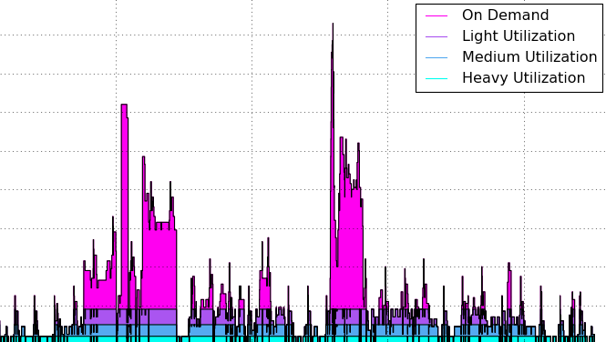
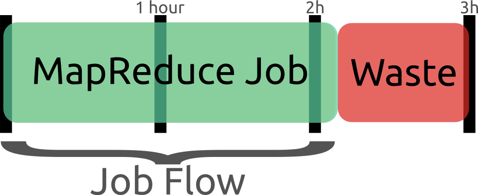
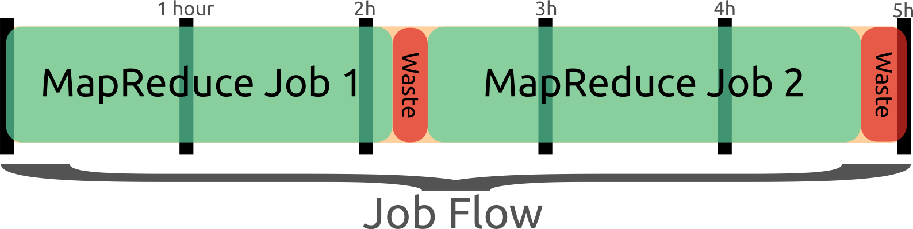
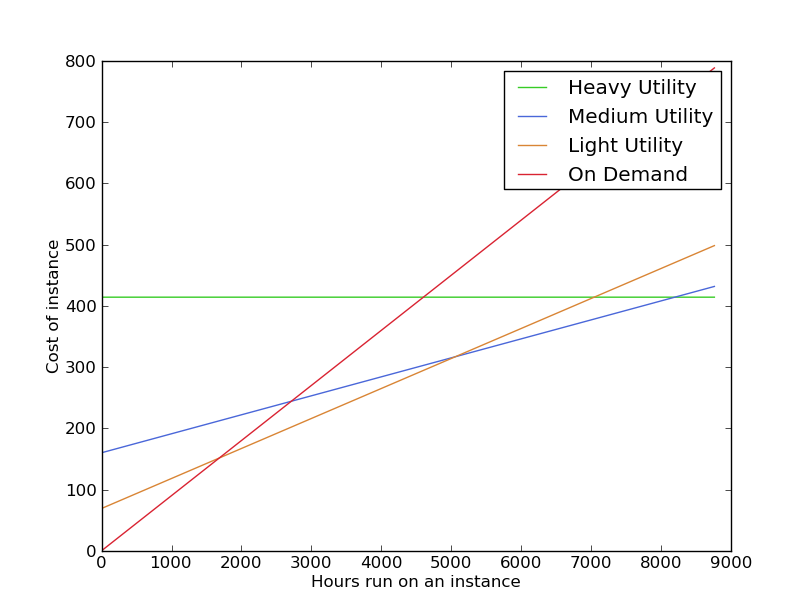

YelpAWSCosts
Table of Contents
1 Yelp's AWS Optimizations center
Jim Blomo
Engineering Manager - Yelp
Lecturer - UC Berkeley
1.1 AWS usage notes
- We use EMR for batch processing
- Site is hosted in our own datacenters
2 Review Highlights

2.1 Example notes
- Unstructured data (reviews) in structured data (review table in DB)
- Find common phrases in business, that are relatively unique across businesses
- One of my favorite bars in SF
- Get a sense of the local flavor of the business without reading literally 2000 reviews
3 AWS Usage
- Peaks of 350+ instances
- Troughs of 0
- Perfect for on demand

3.1 Specifics notes
- "350+" instances across types: m1.large, c1.xlarge, m1.small
- Troughs usually occur on holidays later in the work day
- How do you provision something like that? Just doing the analysis is taking time away from product development
- The charts you're seeing will be of different instance types, they exhibit different traits which I'll go into more depth
- Graph of m1.large, or "work horse" for standard jobs
- As you can see, standard jobs very spikey!
4 Cause of Peaks two_col
- Engineers run experimental jobs at the same time
- Ding! Logs are done
- 1 hour of 100 machines == 100 hours of 1 machine

4.1 Peakedness notes
- Most of our engineers are in SF office; everyone's in the same timezone
- Log shipping and processing occurs right after midnight. Calculating
ad-shutoff, billing, etc. best with low latency
- Can fix problems and restart
- Not too many completely latency insensitive things
- Now that we're using On Demand, might as well use it to its full extent.
- Why wait 10 hours to see how an experiment pans out?
5 Fight for the User two_col
- We've chosen to side with the developers
- Run jobs when it is best for situation
- Trade-off is pricing
5.1 Trade-off notes
- Many ways to lower bills if you smooth out usage
- Smoothing out robustly is difficult: starvation, cross team debugging
- Why didn't my job run? Because someone else's took too long.
6 EMR Pricing
- Job flows are billed hourly, rounding up

6.1 Typical usage notes
- Spin up a job flow, when finished, kill it
- Remaining time and end of last hour is wasted
- Billed for it, but not used
6.2 Job Flow Pooling
- Don't end job flow after job, share remaining time

- New jobs can wait N minutes for an idle flow
6.2.1 Pooling notes
- Billed on the hour, so don't give up early!
- Only shut down idle job flows at the end of the hour
- If another job comes up, reuse idle flow
- Also makes job faster to spin up BONUS for developers
7 Reserved Instances center
| m1.large | Up Front | Hourly |
|---|---|---|
| On Demand | $0 | $0.360 |
| Light | $276 | $0.196 |
| Medium | $640 | $0.124 |
| Heavy | $780 | $0.100 |
Up front cost for a lower hourly rate
7.1 Reserved Instances notes
- Pay money up front, pay less hourly
- This is for US West, m1.large, 1 yr
- 3 yr also an option
- Important: Reserved Instances are a billing construct: you are not physically reserving instances
7.2 Billing Tricks
- Best option depends on your usage

7.2.1 Quick Note notes
- You can see these cost structures cross at different points of usage
- Understanding your optimal plan means understanding your usage
8 EMRio
- Optimizes your EMR/EC2 bills with reserved instances

- Written by Yelp Intern Sean Myers, github.com/Yelp/EMRio
8.1 How it Works notes
- EMRio uses EMR API to look at your usage,
- Calculate optimal purchase plan for past activity
- with the assumption that your future activity will be very similar
- Can recalculate regularly to account for change (eg. increased usage)
- This example is useful because we use m1.small for our cluster masters
- ie we need them for every job flow
- So great opportunity to buy reserved instances
- How many? At what usage rate?
- EMRio figures it out
9 Gotchas animate
- You are reserving a specific region
- There are many more pricing details
- Make sure you know desired instances
- Standardize cluster types
9.1 Details notes
- Specific region: so watch out where your EMR instances are spinning up, and balance them appropriately
- pricing details: can now buy or sell reserved instance on a market place
- We haven't seen the ROI in optimizing that far
- We spent an extra week trying our real-life loads on different setups
- job flow pooling needs similar job flows
- We have a "normal": m1.large, c1.xlarge, m1.xlarge
10 Not for Free
- Writing and using tools still takes time away from product
- We expect big savings from work done on optimization
- 10% savings from job flow pooling
- 20% savings from EMRio
10.1 More trade-offs notes
- Although most developers not impacted, still took engineering time
- Work out bugs, such as killing jobs early
- working around EMR issues like job flows getting "stuck" in odd states
- So we need to see a clear ROI for working on products like this, including the opportunity cost for other activities
11 Hiring center

11.1 We are Hiring notes
- Position on almost every team
- We want to connect everybody on earth with the great local businesses in their area
- Need your help to make more open source solutions, apply them to interesting problems